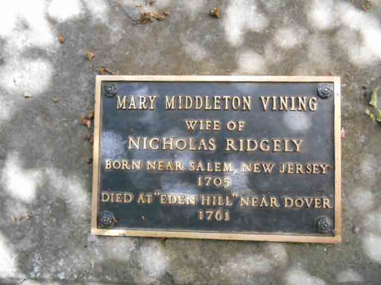

Documentation for Benjamin Vining - (1) Ann [...]; (2) Mary Middleton
Death Data
Gravestone for Mary (Middleton) Vining, in Christ Episcopal Church Cemetery, Dover, Kent County, Delaware (from Find A Grave):
